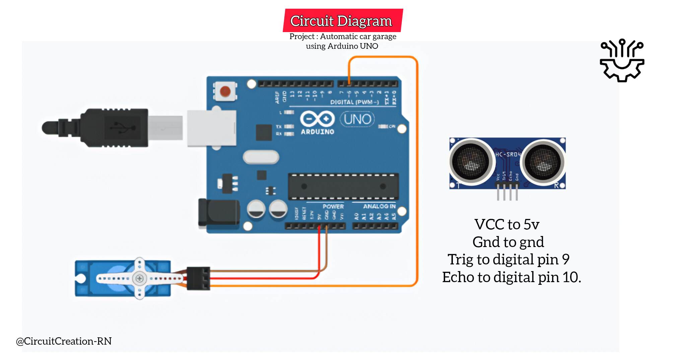

This Arduino UNO project demonstrates an automatic car garage door system using an ultrasonic sensor and a servo motor. When a car comes near the garage, the ultrasonic sensor detects it and the servo motor automatically opens the garage door. When the car moves away, the garage door closes automatically.

Connect the VCC pin of the HC-SR04 ultrasonic sensor to the 5V pin of the Arduino UNO. Connect the GND pin to Arduino GND.
Connect the TRIG pin of the ultrasonic sensor to Digital Pin 9 of the Arduino UNO.
Connect the ECHO pin of the ultrasonic sensor to Digital Pin 10 of the Arduino UNO.
Connect the signal wire of the SG90 servo motor to Digital Pin 6. Connect the servo VCC wire to 5V and the GND wire to Arduino GND.
Make a lightweight garage door using cardboard. Attach the servo motor firmly to the garage structure and connect the servo horn to the door mechanism so that the servo can move the door smoothly.
Connect the Arduino UNO to your computer or Android phone using a USB cable and upload the Arduino program. After uploading, place the garage in front of the ultrasonic sensor and test the automatic door.
The HC-SR04 ultrasonic sensor measures the distance between the sensor and a nearby object such as a car. The Arduino UNO calculates the distance using the time taken for the ultrasonic pulse to return.
When a car is detected within the set distance, the Arduino commands the SG90 servo motor to rotate and open the garage door. When no car is detected nearby, the servo returns to the closed position.
/*
Arduino LED Blink with Mobile Phone
Components:
- Arduino UNO R3
- HC-SR04 Ultrasonic sensor
- Servo motor
- OTG Cable
Author: Circuit Creation RN
*/
#include Servo.h
Servo garageServo;
const int trigPin = 9;
const int echoPin = 10;
long duration;
int distance;
void setup() {
garageServo.attach(6);
pinMode(trigPin, OUTPUT);
pinMode(echoPin, INPUT);
// Starting position — garage OPEN
garageServo.write(110);
delay(500);
}
void loop() {
// Measure distance
digitalWrite(trigPin, LOW);
delayMicroseconds(2);
digitalWrite(trigPin, HIGH);
delayMicroseconds(10);
digitalWrite(trigPin, LOW);
duration = pulseIn(echoPin, HIGH);
distance = duration * 0.034 / 2;
// Car detected
if (distance > 0 && distance <= 15) {
// CLOSE garage
garageServo.write(20);
delay(3000);
} else {
// OPEN garage
garageServo.write(110);
delay(500);
}
}
The setup() function initializes the ultrasonic sensor and attaches the servo motor to Digital Pin 6. The servo starts at 20 degrees, which is the closed position of the garage door.
Inside the loop() function, the HC-SR04 sensor measures the distance to the nearest object. If a car is detected within 15 cm, the Arduino rotates the servo to 110 degrees to open the garage door. If no car is detected within the set distance, the servo returns to 20 degrees and closes the garage.
You can write, compile, and upload Arduino sketches directly from your Android phone using the Arduinodroid app with an OTG cable no laptop or PC required.
Download from Google PlayWhen a car approaches the garage, the HC-SR04 ultrasonic sensor detects the car and sends the distance information to the Arduino UNO. The Arduino then rotates the SG90 servo motor to open the cardboard garage door.
After the car moves away from the detection area, the Arduino commands the servo to return to its original position, automatically closing the garage door. This creates a simple automatic parking garage system.
The ultrasonic sensor detects a nearby car and the Arduino UNO commands the servo motor to open the garage door automatically.
In this project, the Arduino detects a car when it is within approximately 15 cm of the ultrasonic sensor.
This project uses an SG90 servo motor to control the garage door.
Yes. You can change the servo angles in the Arduino code to match the mechanical position of your garage door.
Yes. For a larger garage door, use a suitable servo or another motor system with an appropriate driver and power supply.
{kind=link}